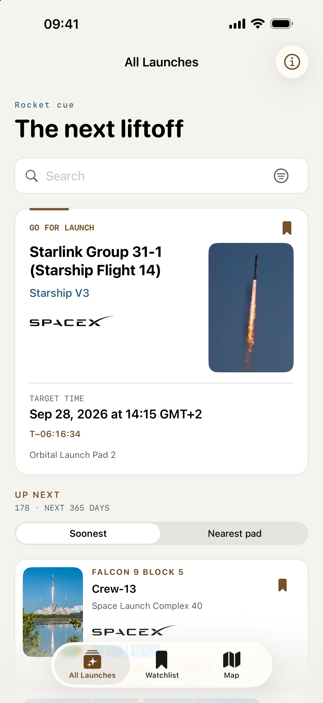
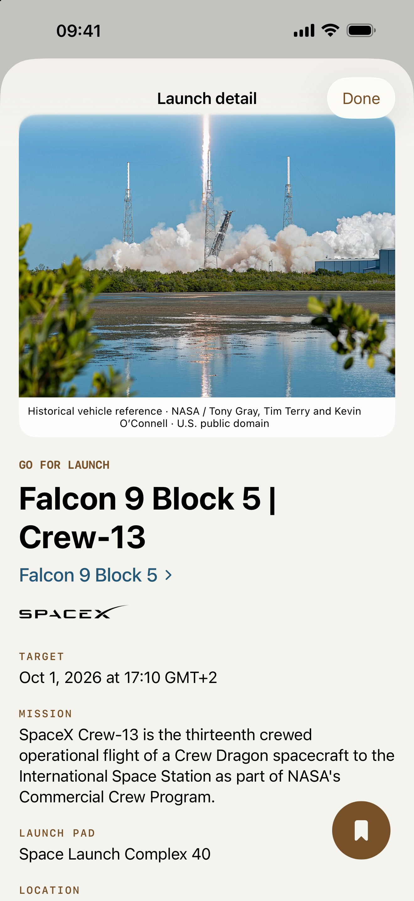
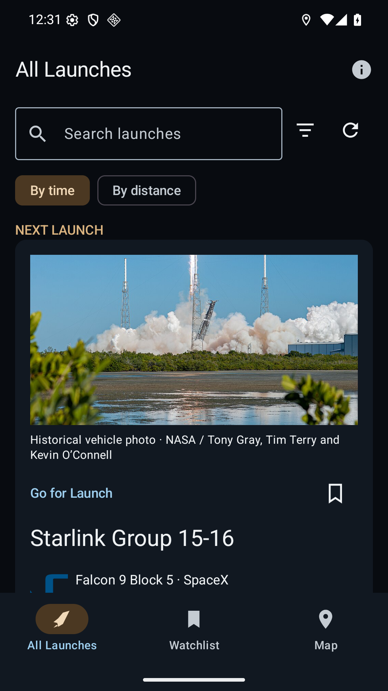
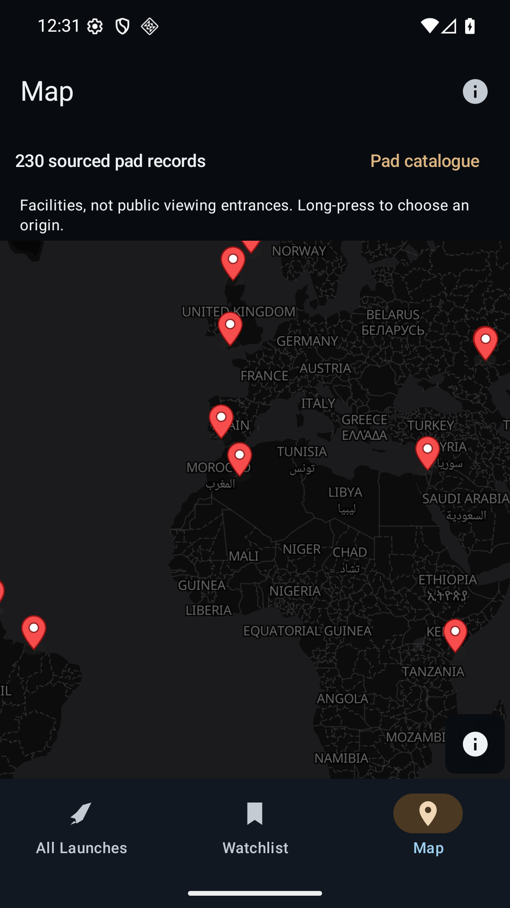

A personal app project
Follow the next liftoff.
Rocket cue brings upcoming rocket launches, launch-pad maps and a personal Watchlist into one clear place. It is free and has no account, ads or in-app purchases.
iPhone and iPad: Download on the App Store.
Android: Download APK · 1.0.0, build 8. Direct-install preview for Android 8.0 or later. Release notes and checksum.
The Android download is hosted on GitHub. A Google Play listing is not available yet. See installation and update help.
Screenshots
iPhone and Android, captured from the running app. Select a screenshot for full size.








iPhone captures: September 28, 2026. Android build 8 captures: October 25, 2026. Launch schedules shown are historical examples.
Android map: © OpenMapTiles · © OpenStreetMap contributors, served by OpenFreeMap.
Browse launches
Search missions and filter by provider, location or target date.
Save a Watchlist
Keep interesting launches on your device without creating an account.
Explore pads
See launch facilities on native iPhone or Android maps. Pins are not public viewing entrances.
Open a webcast
Follow a source-listed stream when one is available, or add a launch to Calendar.
About the data
Launch schedules can change. Rocket cue uses a shared copy of The Space Devs Launch Library 2 and keeps saved data available if an update fails. Source details are available in About. A scheduled refresh is best effort, so always verify time-sensitive launch details with the provider.
Get in touch
Rocket cue is made by Kian Tajbakhsh as a personal, noncommercial project. For help or feedback, see Support or email kian@tajbakhsh.dev.